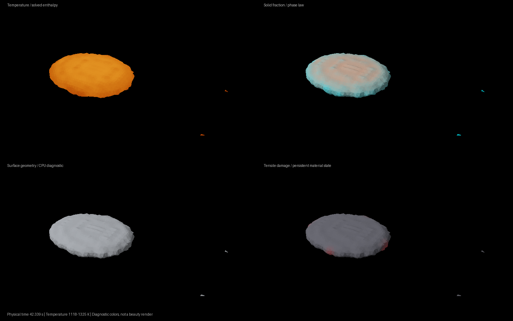
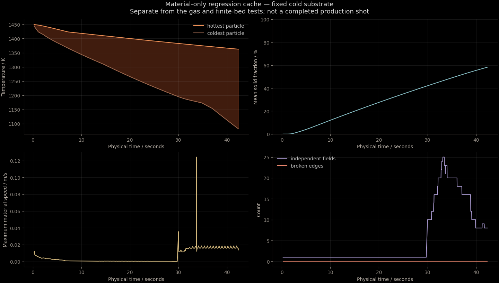

Simulation evidence.
A new three-dimensional CPU MPM implementation. The full lava simulation is not finished or validated yet.
21 checks pass · 1 accuracy gate fails
Material-grid refinement changes flow speed by 19.48%. Final rendering is on hold.
Actual material state

One evolving material cache at 42.34 physical seconds. False-color diagnostics; no sculpted crack lines or authored stage meshes.
The source hashes and individual test results are in the evidence record.What still prevents calling this complete
- The 10 mm → 5 mm material-grid comparison changed RMS speed by 19.48%; the 15% gate failed.
- Long-time fracture convergence, a Coulomb interfragment friction solve, and a complete free-energy audit remain unfinished.
- The gas has heat, pressure and energy-limited fracture dust. Volcanic degassing, bubbles and steam condensation are not implemented.
- The finite rock bed passed a heat-exchange test. It was not used in the material-only cache shown above.
- The current sample is approximately 10 cm across. Nominal material properties and dust parameters have not been experimentally calibrated.
- The old separately authored magma/lava/basalt/obsidian images are not results from this solver.
CPU checks
| bed exchange | pass |
| contact | pass |
| coupled cooling | pass |
| enthalpy | pass |
| fracture | pass |
| fracture topology | pass |
| fragment contact | pass |
| gas displacement | pass |
| gas fracture dust | pass |
| gas heat plume | pass |
| gas still air | pass |
| gas thermal exchange | pass |
| gravity | pass |
| implicit fragment contact | pass |
| insulated heat | pass |
| liquid memory | pass |
| material grid refinement | fail |
| melting reset | pass |
| shear decay | pass |
| solid collision scene | pass |
| stefan | pass |
| transfers | pass |